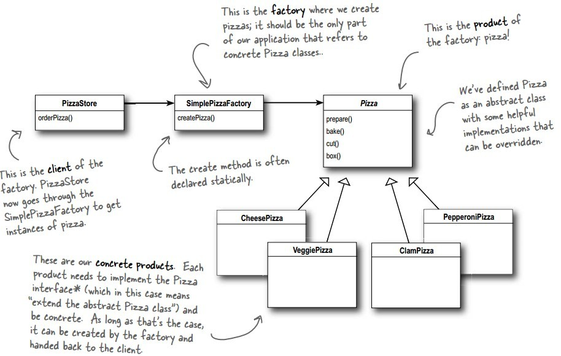
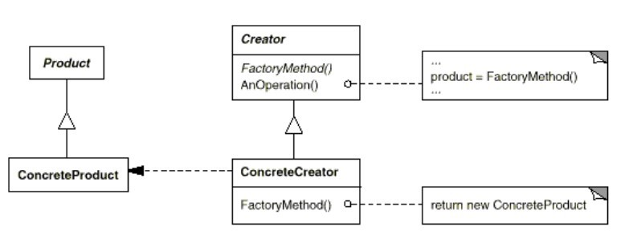

浅谈设计模式四: 工厂模式(Factory Method)
Table of Contents
实例
批萨店有各种不同的批萨，根据不同的用户来点批萨，基本实现如下：
Pizza* orderPizza(string type) { Pizza pizza = NULL; if (type == "cheese") { pizza = new CheesePizza(); } else if (type == "pepperoni") { pizza = new PepperoniPizza(); } else if (type == "clam") { pizza = new ClamPizza(); } else if (type == "veggie") { pizza = new VeggiePizza(); } pizza->prepare(); pizza->bake(); pizza->cut(); pizza->box(); return pizza; }
但是如果批萨店新添或下架其它的品种的批萨呢？就需要在这个函数里添加或删除不同的批萨，而这段代码包括变化的批萨品种，和不变的批萨制作过程。不易后期维护。
工厂模式(Factory Method)
目的
定义创建对象的一个接口，但是让子类来决定实例哪个类。工厂模式(Factory Method)让一个类能推迟它的实例花给子类。代码实例在这里。
工厂模式(Factory Method)可以分为：
- 简单工厂模式（Simple Factory)
- 工厂模式(Factory Method)
实现1. 简单工厂模式（Simple Factory)
- 把实例化批萨变化部分抽离到一个工厂类里
Pizza* SimplePizzaFactory::createPizza(string type) { Pizza* pizza = NULL; if (type == "cheese") { pizza = new CheesePizza(); } else if (type == "pepperoni") { pizza = new PepperoniPizza(); } else if (type == "clam") { pizza = new ClamPizza(); } else if (type == "veggie") { pizza = new VeggiePizza(); } return pizza; }
- 在点批萨里调用这个工厂类方法
Pizza* PizzaStore::orderPizza(string type) { Pizza *pizza; pizza = factory_->createPizza(type); pizza->prepare(); pizza->bake(); pizza->cut(); pizza->box(); return pizza; }
- 总的框架

实现2. 工厂模式（Factory Method)
- 在批萨店接口里定义工厂方法
class PizzaStore { virtual Pizza* createPizza(string item) = 0; };
- 批萨店各自实现接口里的工厂方法
Pizza* NYPizzaStore::createPizza(string item) { if (item == "cheese") { return new NYStyleCheesePizza(); } else if (item == "clam") { return new NYStyleClamPizza(); } else if (item == "pepperoni") { return new NYStylePepperoniPizza(); } else { return NULL; } }
- 整合到批萨店基类点餐里
Pizza* PizzaStore::orderPizza(string type) { Pizza *pizza; pizza = createPizza(type); cout << "--- Making a " + pizza->name() + " ---" << endl; pizza->prepare(); pizza->bake(); pizza->cut(); pizza->box(); return pizza; }
- 整的框架

总结
工厂模式(Factory Method)结构

组成
- 产品定义工厂模式创建对象的接口。
- 具体产品实现产品接口。
- 创建者
- 声明返回产品对象工厂模式方法，创建者可能也定义一个默认工厂方法，来返回一个默认的具体产品对象。
- 用工厂方法来创建产品对象。
- 具体创建者覆盖工厂方法来返回具体产品的实例。
应用场景
- 一个类不能预测它必要创建对象的类。
- 一个类想要让它的子类来指定它创建的类。
- 类委托职能给它许多的帮助子类，然后你想把哪个帮助子类来委任的内容本地化。
缺点
一个潜在的缺点是：那些客户需要成为创建者类（Creator class）的子类来创建一个特殊的具体产品（ConcretePrducit）对象。当客户总要子类化创建者类时，子类化是没有问题的，但相反，客户不需要子类化创建者类时，子类化将使客户不得不处理这一新的变化。